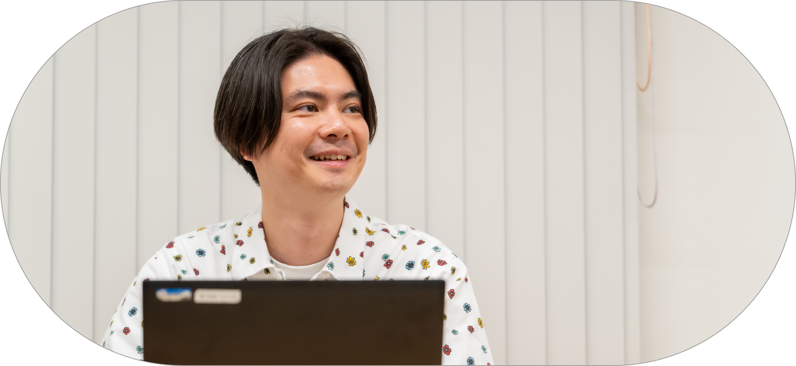
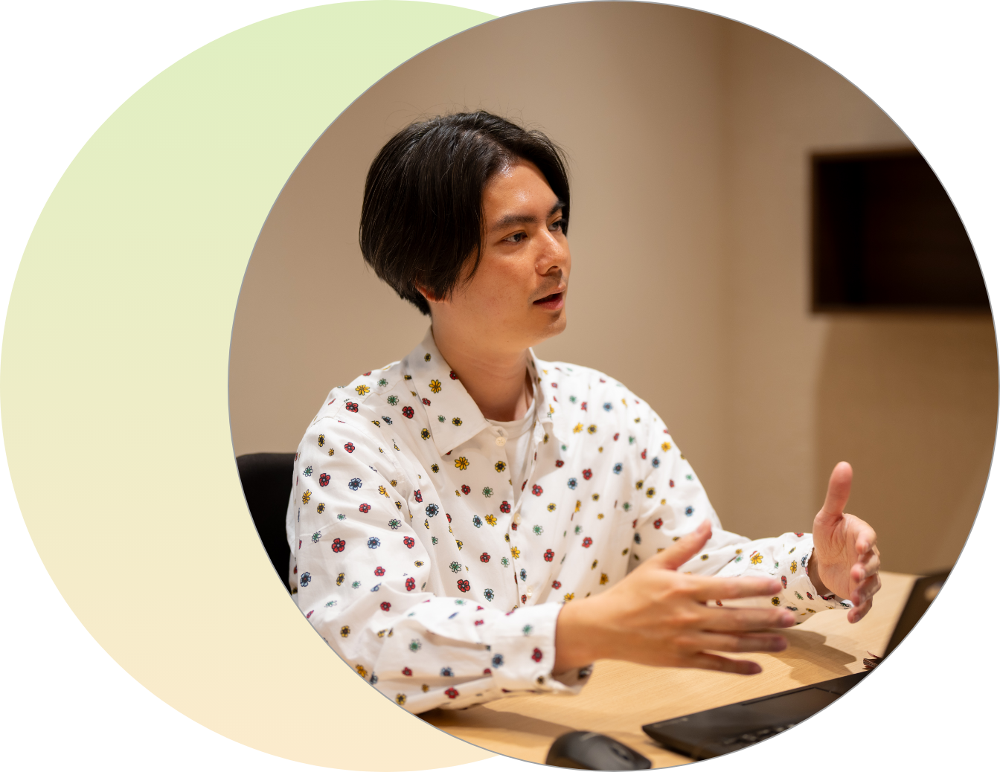
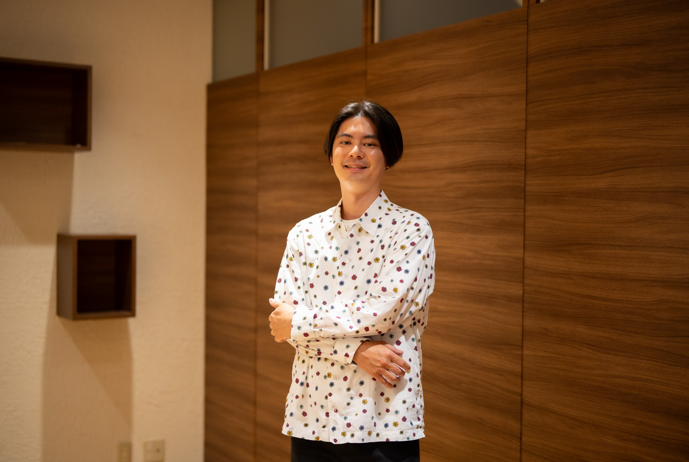

career story

文化をつなぎ、
未来へ広げる
映像本部 海外事業部
グローバル営業室
2016年入社
法学部法律学科卒
宮本 孝平
job
rotation
松竹では、社員一人ひとりの適性やキャリアの可能性を最大限に引き出すため、ジョブローテーション制度を導入しています。若いうちに多様な業務経験を積むことで、自身の適性を見極め、より充実したキャリアを築くサポートをしています。



１年目
歌舞伎座で
劇場の運営に携わる
入社して1年目は、歌舞伎座で劇場の運営に携わりました。劇場の安全管理、案内スタッフの管理、お客様対応など、お客様が劇場で安心して歌舞伎を楽しんでいただくための環境づくりに関わりました。2年目は歌舞伎製作部に異動して、職場も本社に。この1年はプロデューサーという立場で歌舞伎の企画製作に携わりました。とはいっても、まだ入社2年目ですから、ほとんどがアシスタント的な立場。ここでもいろいろな業務を担当しました。人間国宝の方の稽古に立ち会うなど、貴重な経験もたくさんありましたね。
やはり劇場にずっといられるというのは、すごい経験だったと思います。演劇は生ものなので、舞台がたくさんの人たちの力によって成り立っていることを肌で感じられますし、お帰りの時の興奮した面持ちなど、お客様の熱量もダイレクトに伝わってきます。劇場の運営には、松竹の社員ばかりでなく、いろいろな職種や立場の人が携わっています。そういう人たちと日々接しながら、社会人としての基礎を身につけることができたのも大きかったですね。
3年目
人事部で、
自分なりのスタイルを模索する
入社3年目に異動した人事部では、新卒・キャリア採用や内定者研修などに携わりました。新卒採用を担当して3年目、いよいよ自分のスタイルでチャレンジしようと考えていた矢先にコロナ禍が拡大。それまで対面で行っていた説明会や面談がすべてオンラインになるという事態に。業界他社の人事担当者と情報交換などしながら、ありきたりでないやり方を模索しました。カジュアルなラジオ番組みたいに同期社員のトーク会を企画したり、私がインタビュアーとなって役員からリアルな話を聞き出したり……。学生たちの評判もそれなりに高かったように思います。
人事というと地味なイメージがあるかもしれませんが、経営にも深く関わる仕事であり、自分にとっては非常に魅力的でした。この時期に、キャリアコンサルタントの資格も取得しています。経営層と会話する機会も多く、広い視野で松竹という会社を見られたことは貴重な経験でした。
５年目
世界をマーケットに、
日本のアニメを広める
人事部から海外事業部へと異動。最初は国際映画祭への対応に携わり、異動後2年目からはアニメの海外セールスを担当しています。松竹が権利を持つアニメを、海外の配給会社や配信プラットフォームを持つ会社に販売する仕事です。ひと言にセールスといっても、国や地域によってマーケットの状況も異なり、クライアントとのミーティングで情報収集をしたり、他社の海外セールス担当の方とコミュニケーションを取ったりして日々情報を集めています。時には、海外のクライアントとハードなネゴシエーションが必要になることもあります。コロナ禍が明けてからは海外出張も多く、アメリカなどのアニメのコンベンションに参加して、現地のファンの様子を見に行っています。
最近、日本のアニメでは海外マーケットの比重が高まり、松竹においても重要なビジネスの一つになっています。このような海外の動きを視野に入れたアニメ製作をサポートするために、プロデューサーに海外マーケットの最新情報を提供したり、海外クライアントとのミーティングの場を設けたりしています。
また、これは業務とは違うのですが、昨年、4か月ほど育休を取得しました。復帰してからは仕事に対する意識も大きく変わり、素晴らしい経験だったと感じています。

message
好奇心を抱き続けていれば、
どこにいっても魅力的な仕事に出会える。
日本の文化を世界に広めるような仕事がしたい。そう考えたことが、私が松竹を志望した理由でした。いま携わっている海外事業はまさにそのような仕事であり、やりがいも大きい。けれども将来のキャリアステップを考えたとき、さまざまな職種を経験することは、知識や経験に幅が出るので大切だと思っています。思い返すと、歌舞伎座も人事部も、私にとってはとても面白く学ぶことの多い仕事でした。まわりを見渡してみると、松竹には好奇心旺盛な人が多いように感じます。この好奇心さえ忘れることがなければ、どんな部署に行っても魅力的な仕事に出会えるはず。松竹は、そんな会社だと思っています。